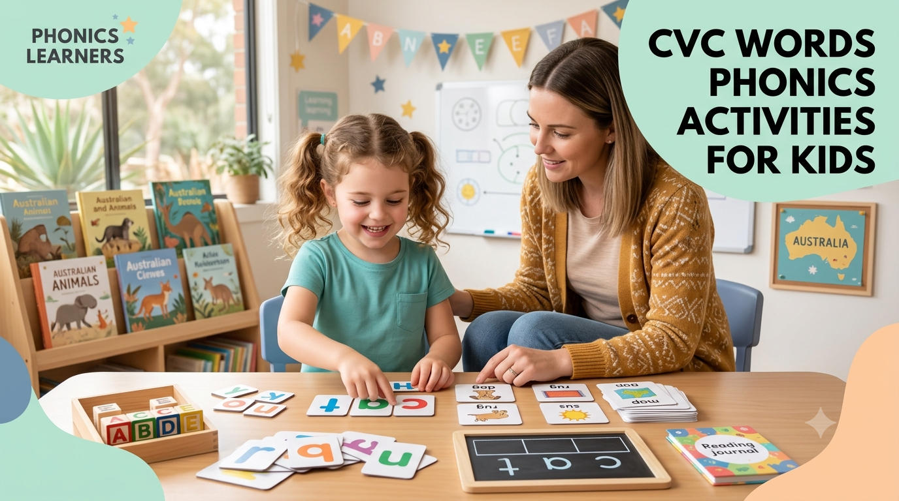

Foundation & Year 1 · Phonics Guide
What Are CVC Words? A Simple Guide for Parents
Is your child in Foundation or Year 1 and starting to read 3-letter words like cat, dog and sun? Those are CVC words — the most important first step towards reading fluently.

In this guide: What CVC words are · Full CVC word family list · Why CVC words matter for reading · 5-minute home practice ideas · Free printable worksheets · FAQs
What Are CVC Words?
CVC stands for Consonant – Vowel – Consonant. It's a simple three-letter word pattern where each letter makes its most common sound, with no silent letters or tricky spelling rules to trip children up.
Because every sound is heard clearly, CVC words are the easiest possible words for a beginner reader to decode — which is exactly why they're taught first under the Australian Curriculum (Version 9.0) in Foundation and Year 1.
CVC Word Families List
Grouping words by their ending "family" makes patterns easier to spot.
- -at family: cat, hat, mat, sat, bat, rat, fat, pat
- -og family: dog, log, fog, jog, hog, cog
- -in family: pin, bin, tin, win, fin, sin
- -en family: pen, hen, ten, men, den
- -un family: sun, bun, run, fun, gun
- -ug family: mug, bug, hug, jug, rug, dug
- -op family: top, hop, mop, pop, cop, shop
- -ed family: bed, red, fed, led
Why CVC Words Matter for Early Reading
1. Blending: Putting sounds together to read a word — c–a–t becomes "cat". This is the core skill behind sounding out unfamiliar words.
2. Segmenting: Breaking a word apart into its sounds — "cat" becomes c–a–t. This underpins spelling and phonics-based writing.
Together, blending and segmenting give children the tools to decode almost any short word they encounter, building the confidence they need before moving on to blends and digraphs.
How to Practise CVC Words at Home (5-Minute Ideas)
Short, playful sessions work better than long ones.
1. Oral Blending Game
Say a word sound by sound — "m-a-p" — and ask your child "What word is that?" This builds blending without needing any materials at all.
2. One Word Family at a Time
Focus on a single family (like -at or -og) until your child feels confident, then move to the next. Mixing too many patterns early can slow progress.
3. Find the Sound
Ask questions like "What's the middle sound in dog?" This strengthens segmenting and helps with spelling later on.
4. Use Printable Worksheets
Short worksheet sessions reinforce what your child has practised through play and games.
Explore our free CVC and phonics worksheets for extra practice.
Free CVC Words Worksheets
Our printable CVC worksheets cover word families, blending, segmenting and simple sentence building — free to download, no sign-up needed, and aligned with the Australian Curriculum (Version 9.0).
Common CVC Blending Misconceptions
These are worth knowing before you assume a child "just isn't getting it".
"They know all the sounds, so they should be able to blend." Knowing individual letter sounds and blending them into a word are two separate skills. A child can say /c/ /a/ /t/ perfectly and still say a completely different word once asked to blend it — that's a normal part of learning, not a sign something's wrong.
"Guessing a word from the picture means they can read." Picture-guessing is a common workaround, not decoding. If a child changes their answer once the picture is covered, it's worth going back to sound-by-sound blending practice.
"More phonics worksheets always help." Extra practice isn't harmful, but if a specific blend keeps tripping a child up, targeted practice on that one pattern (like oral blending games with just that word family) usually helps faster than general repetition.
Parent & Teacher Tips
No worksheet needed for most of these — just a few spare minutes.
- Sound boxes: draw three boxes on paper and move a counter into each one as your child says a sound — c-a-t becomes three counters, three sounds
- Oral blending on the go: "Can you get the /c/ /u/ /p/?" works in the car, at the table, anywhere — no materials required
- Magnetic letters or fridge magnets: build CVC words together and swap one letter at a time (cat → hat → hot)
- "I spy" with sounds: "I spy something that starts with /b/ and ends with /t/" (bat) turns practice into a game
- Keep it short: 6–8 words per session is plenty — stopping while it's still fun beats pushing through when focus fades
Explore More Foundation & Year 1 Resources
Browse the full Foundation worksheet collection or Year 1 worksheet collection, including Maths, English, Reading, Writing, Phonics and Science resources.
Frequently Asked Questions
When should a child start learning CVC words?
Most children start CVC words in Foundation, once they know most letter sounds from A to Z. Some begin earlier if they're confident with individual sounds.
What are 10 easy CVC words to start with?
Good starting words include cat, dog, sun, pen, hat, big, map, bed, cup and log.
What comes after CVC words?
After CVC words, children usually move on to consonant blends (bl, st, cr) and digraphs (sh, ch, th), followed by CVCC and CCVC word patterns.
Are CVC worksheets free to download?
Yes. Aussie Primary Academy's printable CVC words worksheets are free to download, with no sign-up required.
Final Thoughts
CVC words are the building blocks of early reading. With a few minutes of playful practice each day, most children move through blending and segmenting confidently within a few weeks.
At Aussie Primary Academy, we're proud to help Australian families with free printable learning resources that make phonics practice enjoyable and easy to fit into everyday life.